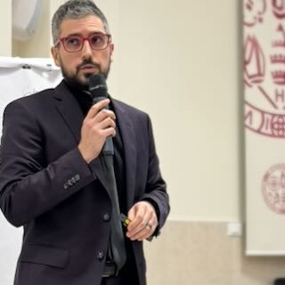

Federico Atzori
pronunciation: /feˈdeːriko aˈzoːri/
*surname refers to an ancient village in the Judicate of Cagliari
Behavioral & experimental economics
What shapes our choices?
I'm a researcher trying to understand decision-making, cooperation, public interventions, and creativity with AI.
Academic profile
FARecent news
- Publication Creative Minds in the Age of AI. Personality Traits, AI Perception, and Creativity Tasks — Atzori F., Corazzini L., Guarnieri A. (2026), Journal of Behavioral and Experimental Economics, 102659, volume 125
- Working paper The Unpriced Cost of Replication: Evidential Fragility and the Allocation of Verification Effort — Atzori F. (2026), SSRN 7456540
- Working paper A Priori Power Analysis Wizard: A Guided Interface for Choosing and Justifying Sample-Size Calculations in Behavioral Science — Atzori F. (2026), SSRN 7247658
Who am I
Economics gives me the questions; experiments give me a way to test them. I look at the gap between the rules people face and the choices they make: why they cooperate, when norms matter, and how institutions or technology change the options on the table.
The method depends on the question. Sometimes it is theory or existing data; sometimes it means building an experiment and taking it to the lab or the field. Right now I am working on energy poverty, public interventions, creativity with AI, reciprocity, and the choice between speaking up and walking away.